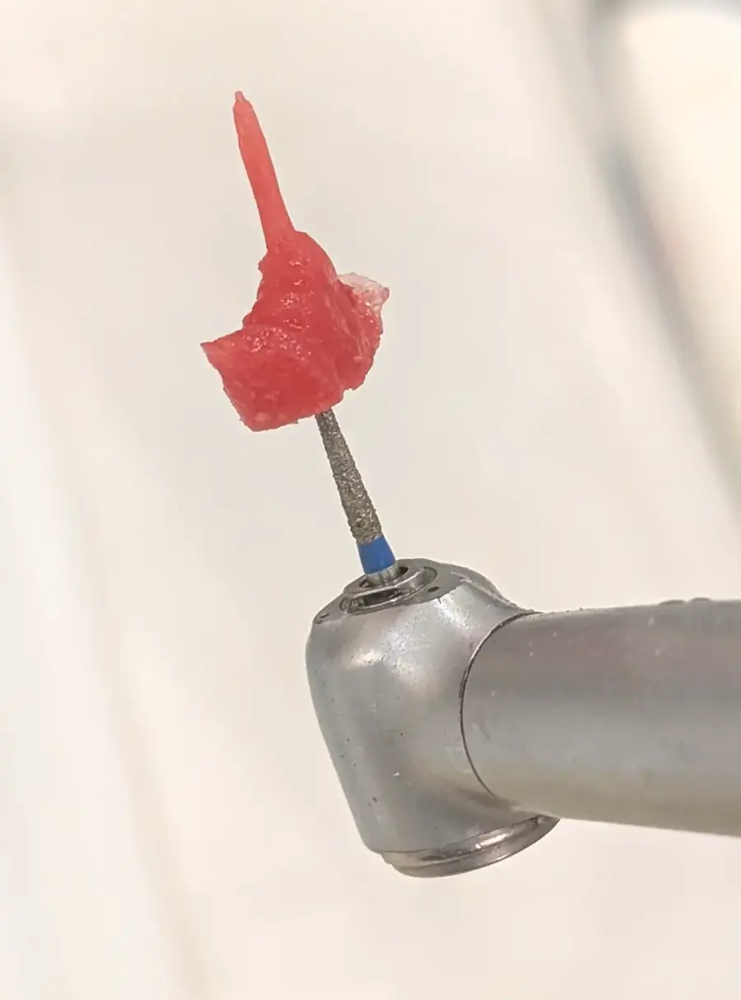

نسخه استخراجشده؛ ترجمه یا تأیید علمی انجام نشده است. وضعیت: captured
پست و کور تازه ساختهشده را امتحان کردهای و حالا بیرون نمیآید. فیت خیلی دقیق است و اصطکاک زیاد؛ نه با سوند درمیآید، نه با دست.
کشیدن با پنس یا تلاشهای معمول نتیجه نمیدهد و حتی ممکن است باعث آسیب یا تغییر شکل کور شود.

ترفند فرز هم سریع است، هم قابلکنترل، و هیچ فشاری به دندان یا پست وارد نمیکند؛ فقط از گیر خود فرز برای کنترل کور استفاده میکنی.
بعد از خروج، اتصال بدون اهرم کردن باز میشود و هم فرز و هم پست و کور سالم میمانند.
هرچه تطابق پست و کور با کانال دقیقتر باشد، اصطکاک سطح تماس بیشتر است و همان فیت آرمانی میتواند قطعه را هنگام امتحان قفل کند.
مسئله زور بیشتر نیست؛ مسئله نبود یک دستگیرهی کنترلشده است، و فرز گیرکرده همان دستگیره میشود.
گاهی وقتی پست و کور را امتحان میکنی، به خاطر فیت بالا از دندان راحت درنمیآید؛ نه با سوند، نه با دست. راه دیگرش استفاده از کویترون است که پست و کور خیلی سریع با آن خارج میشود.
نوع سؤال: ساخت کلمه · 7 خانه
حروف منبع: و · ک · ن · و · ر · ت · ی